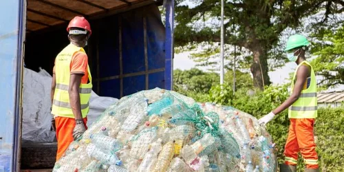

A cleaner Nigeria starts with us
Recycle today. Protect tomorrow.
RecycleNG gives families, students, and communities simple information about sorting waste, reducing rubbish, and recycling everyday materials.
Explore Recyclable Materials
Why it matters
Small actions can make a big difference
Waste is part of everyday life. Bottles, cans, paper, food packaging, and other materials can quickly fill our homes and communities. When we separate useful materials from general waste, we make it easier for recyclable items to be collected and reused.
Start here
Three simple recycling steps
Collect
Keep useful recyclable materials instead of mixing everything together.
Clean
Empty and rinse containers when practical before storing recyclables.
Separate
Sort materials into groups so they are easier to handle.
Have a question?
Share your recycling experience with us.
Use our simple form to send a question, suggestion, or recycling experience.